-
Under Web-temaet har jeg lært at lave responsivt websites til mobil- og desktop interface. Metodisk, opsatte jeg wireframes og layouts i vha. Figma. Mine wireframes gav et overblik over hvordan siden blev opsat i mobile- og i desktop-version. Layoutsne gav et udgangspunkt for min CSS-kodning i Visual Studio Code, som jeg brugte til at kode min hjemmeside.
Responsiv hjemmeside


-
Jeg lærte at udvikle en hjemmeside om film med udgangspunkt i brugerens oplevelse. Som start undersøgte jeg bla. formål og målgruppe, herudfra dannede jeg en User story, der gør opmærksom på hvad man kan få ud af siden som bruger. Jeg lavede en problemstilling til at undersøge nærmere om hvad der er vigtigst for forbrugeren for at få mest ud af siden, og fik svar gennem nogle interviews.
Hjemmeside om film
 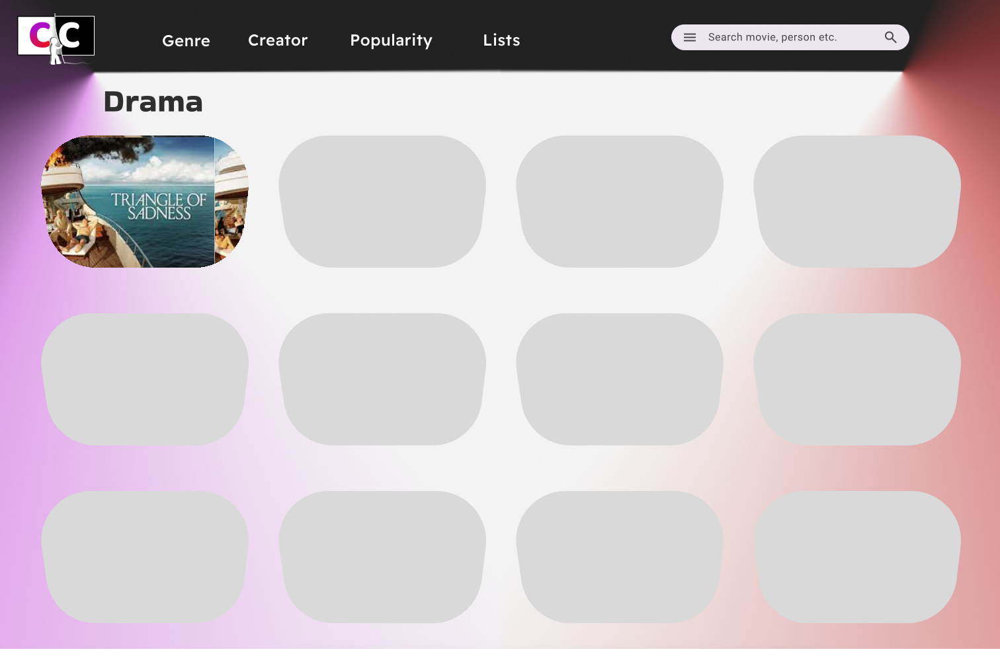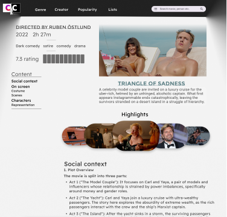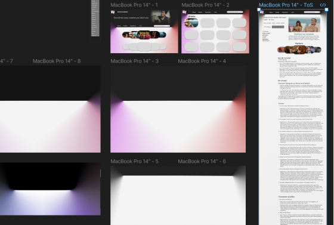
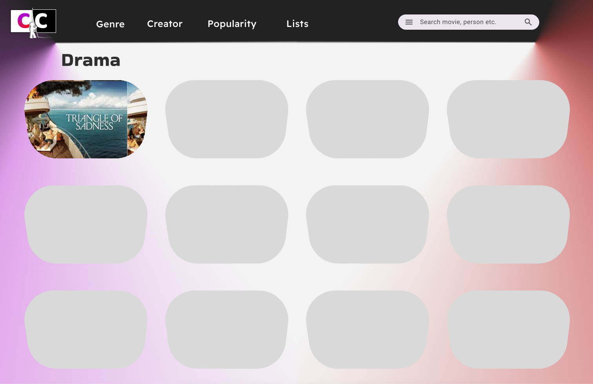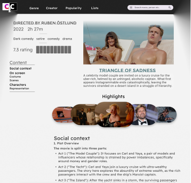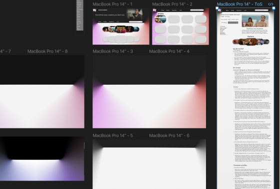Baggrund lavet af to frames sat sammen
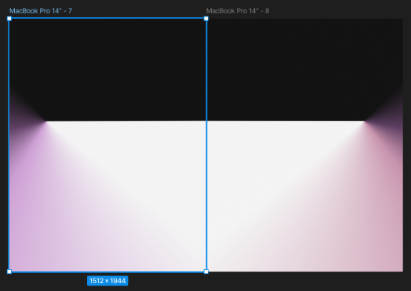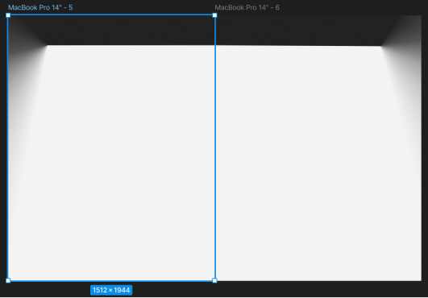Ideudvikling
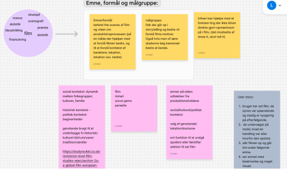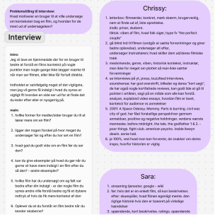Gennem desk research, fandt jeg trends fra andre sider, der gav inspiration for min sides indholdskatalog og hvad der ville gøre den informativ og navigerbar. Derudover lavede jeg også moodboard og style tile til at give siden en æstetik, da dette er også essentielt for brugerens indtryk af siden. Dette testede jeg også gennem en 5-sekunders test med hifi-wireframe og en prototype lavet i Figma.
Research og inspiration
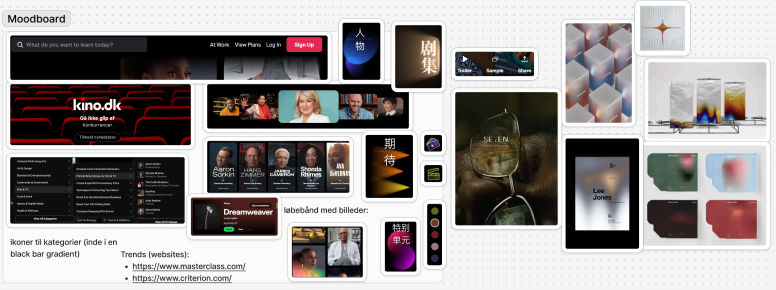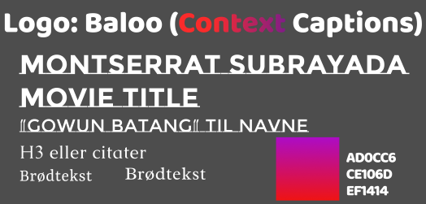I VS Code og Figma arbejdede jeg med elementer som favicon (logo lavet i Figma), menu og en billede-karrusel med hover-effekt, søgebar og header.
Design af elementer: logo/favicon og hover effekter
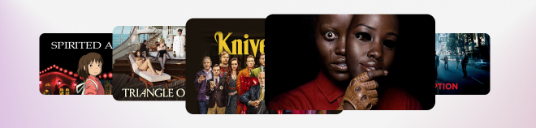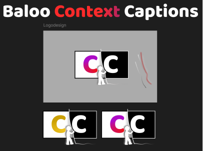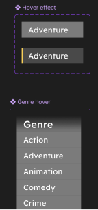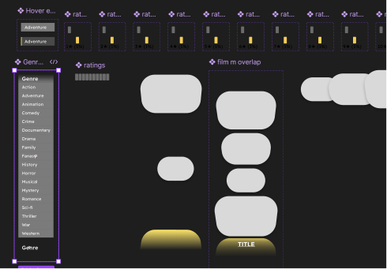Lofi-wireframe og layout
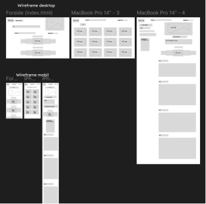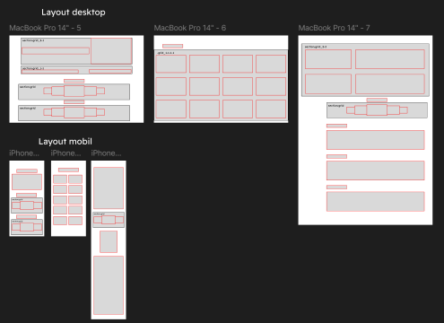 -
Under animation lærte jeg at kode et spil fra ide-fase med valg af stil hvor bla. karaktererne var inspireret af kawaii-stilen, og fulgt af design-princippet kiki og bouba. Jeg sketchede forsiden og spil-baggrunden som brugte atmosfærisk perspektiv. Derefter tegnede jeg mine sketches ind i Illustrator.
Jeg lærte også at bruge Javascript gennem øvelser.
Sketch
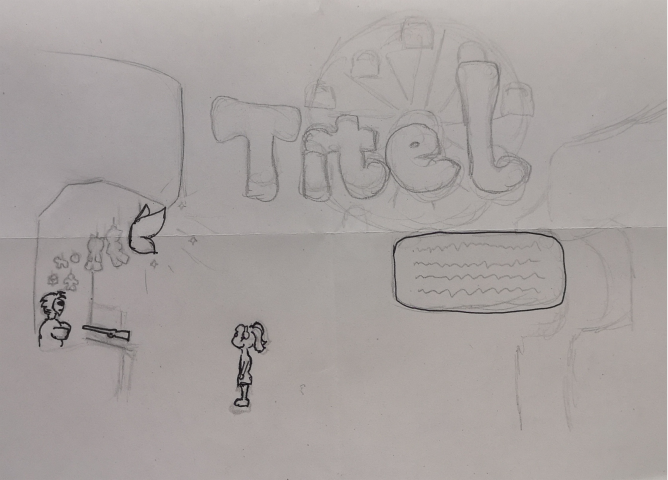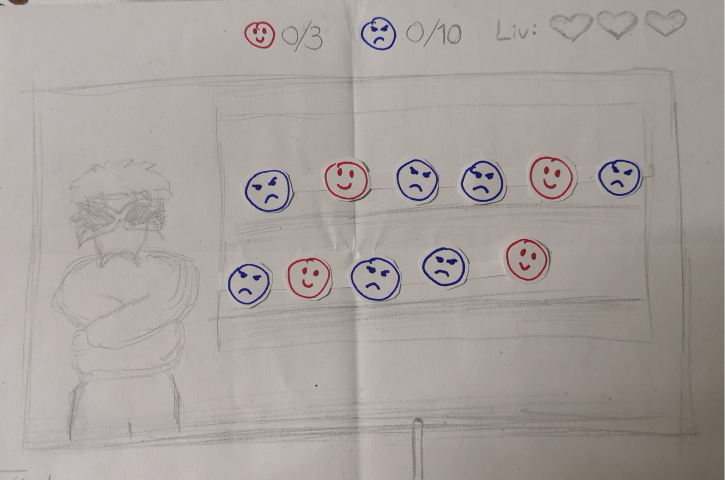
Aktivitetsdiagram og moodboard
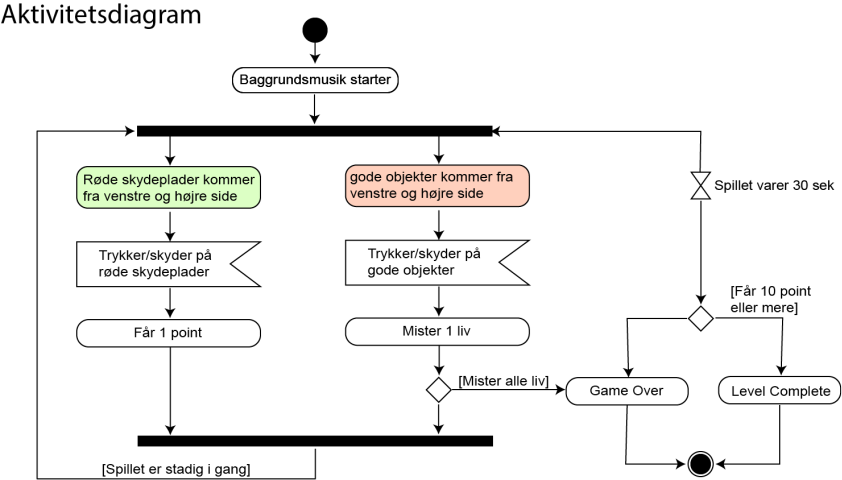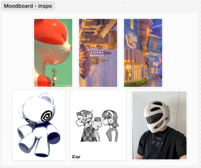Illustrator
Forside

UI-elementer

Baggrund med og uden ui-elementer


Game over og Level complete


-
Her arbejdede jeg med at producere indhold selv, udover at lave en hjemmeside dertil. Både at tage billeder, og videoer og at tilpasse dem til optimale, bæredygtige formater. Jeg har klippet til videoer i Premiere Pro og Audition til lyd. Jeg lavede også interview. Jeg har i gruppeprojekt redesignet en hjemmeside for en forretning, hvor analyserede og vurderede dens hjemmeside og målgruppe, som den var. Derudfra har vi brugt færdigheder fra de forrige temaer til at bedre tilegne en side til forretningens behov. Jeg har også lært at bruge Github og After effects.
Redesign henholdsvis før og efter
Forside
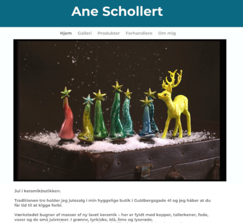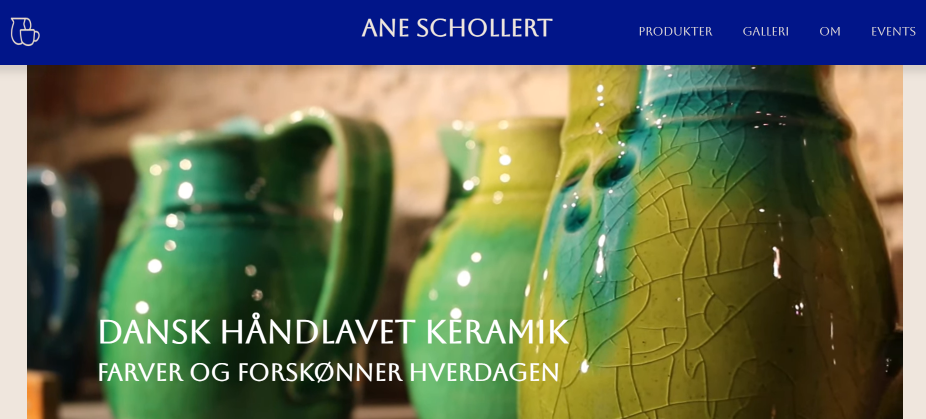Produktside
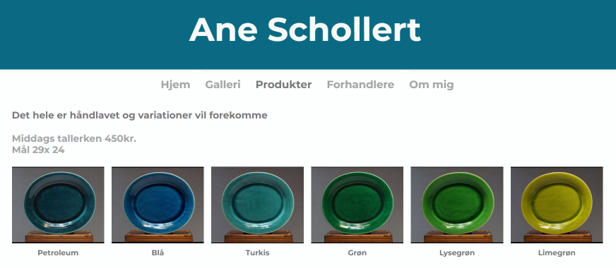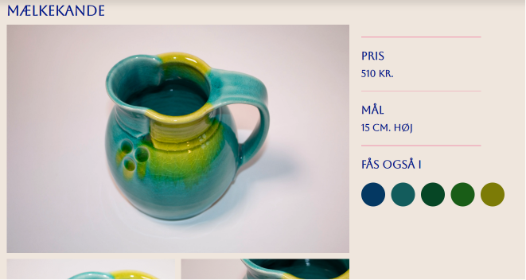Responsivt header og footer redesign
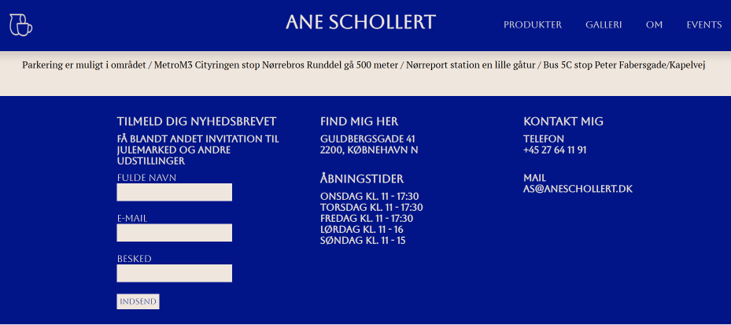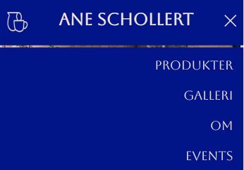Produceret indhold
 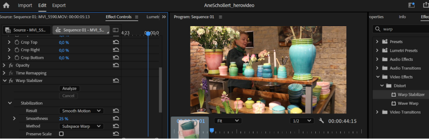
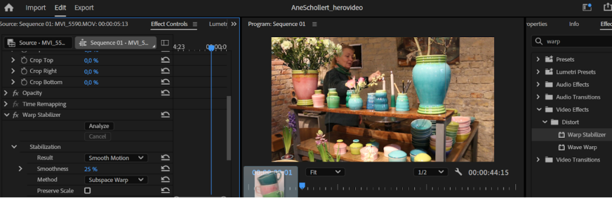Første udkast, wireframe of layout af forside
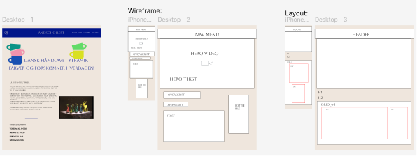